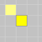
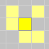
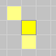
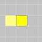
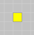

John Conway’s Game of Life
The Game of Life is not your typical computer game. It is a cellular
automaton, and was invented by Cambridge mathematician John Conway.
This game became widely known when it was mentioned in an article
published by Scientific American in 1970. It consists of a collection of
cells which, based on a few mathematical rules, can live, die or
multiply. Depending on the initial conditions, the cells form various
patterns throughout the course of the game.
Rules
- For a space that is populated:
-
Each cell with one or no neighbors dies, as if by solitude.

-
Each cell with four or more neighbors dies, as if by overpopulation.

-
Each cell with two or three neighbors survives.


- For a space that is empty or unpopulated
-
Each cell with three neighbors becomes populated.

The Controls
Choose a pattern from the lexicon or make one yourself by clicking on the cells.
The 'Start' button advances the game by several generations
(each new generation corresponding to one iteration of the rules).
More information
In the first video, from Stephen Hawkings’ documentary The Meaning of Life, the rules are explained,
in the second, John Conway himself talks about the Game of Life.
The Guardian published a nice article about John Conway.
Implemented by Edwin Martin <edwin@bitstorm.org>